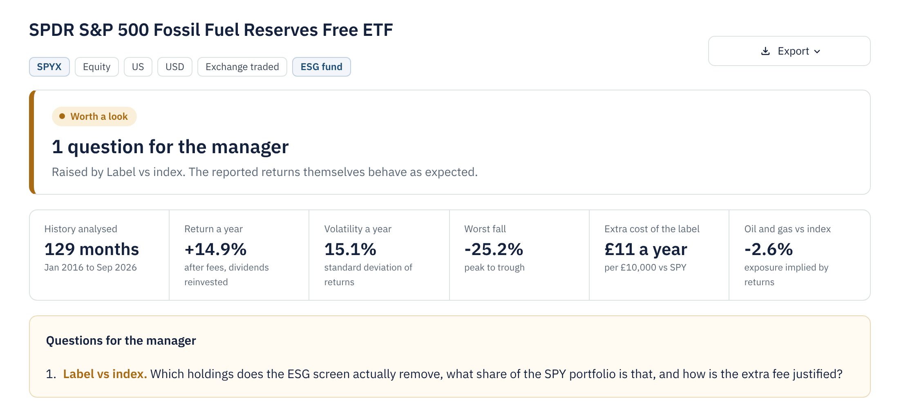
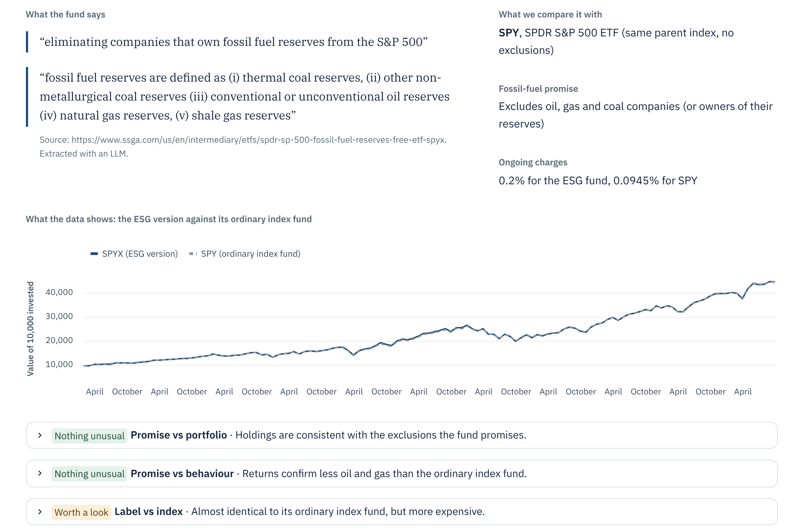
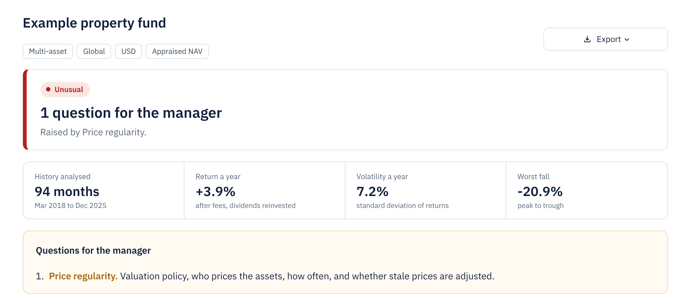

1The problem
Every fund makes two kinds of promise. Numbers: the returns and the risk it reports. Words: its style, its benchmark and, increasingly, its ESG exclusions. Advisers, fund selectors and investors rely on both, but almost nobody tests them. Checking today means reading factsheets by hand or buying ESG ratings that measure something else.
Funds holding illiquid assets (property, private credit, hedge strategies) are valued by appraisal or by model. Stale or managed valuations make returns look smoother and safer than the assets really are (Getmansky, Lo & Makarov, 2004). Managers also avoid reporting small losses (Bollen & Pool, 2009). Elsewhere, “active” funds charge active fees while hugging an index (Cremers & Petajisto, 2009). The extreme case, Madoff, was famous for an implausibly smooth track record.
Greenwashing is now an enforcement issue. The SEC fined DWS $19 million in September 2023 for misleading ESG statements, its largest greenwashing penalty, after fines on Goldman Sachs Asset Management ($4m, 2022) and BNY Mellon ($1.5m, 2022). ESG ratings do not settle the question: providers disagree widely (Berg, Kölbel & Rigobon, 2022), and a rating says how “green” a fund looks, not whether it does what its own documents promise.
Source: FCA; ESMA (see references).
Every one of them must show that the funds they recommend are what they claim to be.
Sources: Morningstar Sustainalytics (2026); Investment Association (2026); FCA (2025 survey).
Our answer in one line
A tool that reads what a fund says, measures what it does, and turns every gap into a precise, polite question for the manager: never an accusation, always a documented reason to ask.
2The product
FundTruth is a web app on a Python engine. A user picks a fund from the watchlist or adds their own, and in seconds receives a plain-English verdict, the numbers behind each check, and the questions to send to the manager.
Public data: monthly prices, market factors, issuer holdings files, the fund's own documents (KID, factsheet).
Your data: paste from Excel or a factsheet, or upload a file. Units and dates are recognised automatically, and files stay on your computer.
Price regularity, Style and benchmark, Return beyond the market, Small gains and losses, Position among peers (machine learning), Shape of risk.
Promise vs portfolio, Promise vs behaviour, Label vs index. No ESG ratings: the fund's own words are the benchmark.
Evidence and peer range for every check, questions for the manager, a one-page PDF report, and the option to add the fund to the comparison set.

The verdict comes first, then six headline numbers (including the yearly cost of the ESG label), then the questions for the manager. The checks sit in tabs below.

The fund's promise is quoted word for word with its source, then compared with its ordinary index fund: holdings, behaviour and fees.
| User | Job to be done |
|---|---|
| Fund selectors, wealth managers | Screen a fund range and document due diligence before a fund goes on the buy list. |
| Independent financial advisers | Show the FCA that recommended funds are what they claim to be, at a fraction of the cost of a research platform. |
| Compliance teams at asset managers | Test their own ESG marketing against their own portfolios before a regulator or journalist does. |
| Fund platforms | Monitor every fund on the shelf through an API and flag the ones that need a question. |
3Method and data
A status needs statistical evidence: Unusual if p < 0.05, Worth a look if p < 0.10, otherwise Nothing unusual. P-values come from a fixed reference set of real funds, which changes only when a user adds a fund to it.
Universe: 40 liquid US funds and ETFs (16 equity, 14 bond, 10 multi-asset) plus 8 ESG funds compared with their ordinary index fund (SPYX, EFIV, ESGU, SUSA, ESGV, CRBN; London-listed SUSW.L and V3AB.L, analysed in GBP).
| Check | Question | Method | Basis |
|---|---|---|---|
| Module 1: Integrity of returns | |||
| Price regularity | Are returns too smooth for market prices? | Lag 1-3 autocorrelation, Ljung-Box test, rank against peers; AR(1) de-smoothing shows the volatility the fund would report on market prices | Getmansky, Lo & Makarov (2004) |
| Style and benchmark | Is an “active” fund an index tracker in disguise? | Fama-French three-factor regression; R² ≥ 0.95 with low tracking error and an above-median fee; R² and tracking error against the declared benchmark | Cremers & Petajisto (2009); Fama & French (1993) |
| Return beyond the market | Is the alpha too good to be true? | Annualised alpha, t ≥ 2 and upper tail against peers; stability across sub-periods (2020 crash, 2022-23) | Fama & French (1993) |
| Small gains and losses | Are small losses being hidden? | Binomial test: returns just above vs just below zero, against the fund's own distribution | Bollen & Pool (2009) |
| Position among peers | Does the risk profile look unlike similar funds? | Machine learning: Isolation Forest on volatility, skewness, autocorrelation, alpha and R², plus k-means distance | Liu, Ting & Zhou (2008) |
| Shape of risk | What does the risk look like? (descriptive) | Maximum drawdown, skewness, kurtosis, up- and down-capture | Context only, no status |
| Module 2: ESG promises | |||
| Promise vs portfolio | Does the fund hold what it says it excludes? | Issuer holdings against the parent index, the energy sector and the Norges Bank (Norway's sovereign fund) exclusion list, matched to the fund's own exclusion wording (owning coal reserves is not the same as burning coal) | Holdings files; NBIM list |
| Promise vs behaviour | Does a “fossil-free” fund still move with oil and gas? | Regression of the fund's return over its ordinary index fund on energy's return over the same fund (formula below), Newey-West errors. Works without holdings data | Newey & West (1987) |
| Label vs index | Is the ESG version really different, and what does the label cost? | R², tracking error and active share against the ordinary index fund; fee gap in £ per £10,000 a year and compounded over 20 years | Cremers & Petajisto (2009) |
Smoothed reporting. The observed return is a moving average of true returns, creating autocorrelation and understating risk.
Promise vs behaviour. If the ESG fund drops energy stocks, its return over the parent moves against energy; the slope estimates the missing weight.
4Evidence
No public dataset labels which funds misreport, so we test FundTruth the way a laboratory tests a diagnostic. We plant known anomalies in real funds (positive control), count false alarms on simulated honest funds, run it on liquid funds where little should be found (negative control), and examine a real ESG case with two independent methods.
Source: FundTruth validation on the 40 real US funds (Jan 2016-Sep 2026) and on simulated honest funds; tests at the 5% level.
“eliminating companies that own fossil fuel reserves from the S&P 500”
The question FundTruth sends
Label vs index. Which holdings does the ESG screen actually remove, what share of SPY is that, and how is the extra fee justified?
The promise is kept. What needs explaining is the price of the label, for a portfolio 97% identical to SPY.
Returns themselves: Nothing unusual on all integrity checks. FundTruth separates “the numbers are fine” from “something needs explaining”, and raises no question where the promise is kept.

A property fund valued by appraisal (simulated example, uploaded through “Check your own fund”). Price regularity reads Unusual, and the question is about the valuation policy.
5Business model and growth
Prices, volumes and costs are illustrative assumptions. The working product, its validation and the code already exist.
Private investors, students
Watchlist, 3 own-fund checks a month
IFAs, fund selectors, wealth managers
Unlimited checks, both modules, PDF reports, alerts
Asset managers' compliance and product teams
5 users, monitoring of the firm's own fund range, audit trail, API
Fund platforms, DFMs, research houses
API and white-label watchlist for the whole shelf
London IFAs and fund selectors via the free tier; every exported PDF carries the brand to the manager who receives it.
ExpandCompliance teams of UK managers under SDR, then EU managers under ESMA's naming rules.
ScalePlatform and API licences, partnerships with compliance consultancies.
Costs: team, data and hosting (mostly people). Year-3 users are 1.6% of the UK's 31,000 advisers.
| Alternative, what it gives and what it costs | Tests own promise | Checks returns | Asks the manager |
|---|---|---|---|
| ESG ratingsMSCI, Sustainalytics: a “greenness” score; paid licence | |||
| Research platformsMorningstar Direct, FE fundinfo: broad data; costly | |||
| NGO screensFossil Free Funds, FinanceMap: fossil exposure; free | |||
| Manual reviewAn analyst reads KIDs and factsheets; hours per fund | |||
| FundTruthVerdict, evidence, manager questions; £150 a month |
covered partly not covered. Assessment by the authors.
1,800 simulated funds with a known truth, 96 months each, 20 repetitions. Below 20 funds of a type, no p-value can fall under 0.05, so nothing can reach “Unusual”.
Each fund a user checks can join the comparison set as anonymous summary statistics. Today each fund type has 10-16 funds, so FundTruth compares every fund with all 40 together: the checks work, but a bond fund is also measured against equity funds. Every fund users add moves each type towards 40 comparable funds: at 20 the smoothing check catches all strong smoothing and 57% of mild cases; from about 40 it levels off at 61-62%, with at most 1.5% false alarms. Corrections to promises and managers' answers add labels that no public dataset has.
Pilot with five London advice firms
Q2 2027Automatic holdings for iShares and Vanguard; KID parsing for UK and EU funds
H2 2027Illiquid-fund data partnerships (property, private credit); momentum and non-US factors; Bloomberg connector
2028EU launch and platform API
Berg, F., Kölbel, J. & Rigobon, R. (2022). Aggregate confusion: the divergence of ESG ratings. Review of Finance, 26(6).
Bollen, N. & Pool, V. (2009). Do hedge fund managers misreport returns? Evidence from the pooled distribution. Journal of Finance, 64(5).
Cremers, M. & Petajisto, A. (2009). How active is your fund manager? A new measure that predicts performance. Review of Financial Studies, 22(9).
Fama, E. & French, K. (1993). Common risk factors in the returns on stocks and bonds. Journal of Financial Economics, 33(1).
Getmansky, M., Lo, A. & Makarov, I. (2004). An econometric model of serial correlation and illiquidity in hedge fund returns. Journal of Financial Economics, 74(3).
Liu, F., Ting, K. & Zhou, Z. (2008). Isolation forest. IEEE International Conference on Data Mining.
Newey, W. & West, K. (1987). A simple, positive semi-definite, heteroskedasticity and autocorrelation consistent covariance matrix. Econometrica, 55(3).
ESMA (2024). Guidelines on funds' names using ESG or sustainability-related terms.
FCA (2023). PS23/16 Sustainability Disclosure Requirements and investment labels. FCA (2024). FG24/3 Anti-greenwashing rule guidance. FCA (2025). Understanding the financial advice market (survey).
Investment Association (2026). UK investment management industry assets under management, 2025.
Morningstar Sustainalytics (2026). Global Sustainable Fund Flows: Q1 2026.
SEC (2023). DWS to pay $25 million for anti-money laundering violations and misstatements regarding ESG investments, 25 September 2023.
Data: Yahoo Finance; Kenneth R. French Data Library; State Street SPDR holdings files and issuer fund pages (State Street, iShares, Vanguard); Norges Bank Investment Management exclusion list via OpenSanctions. Data to 30 September 2026.